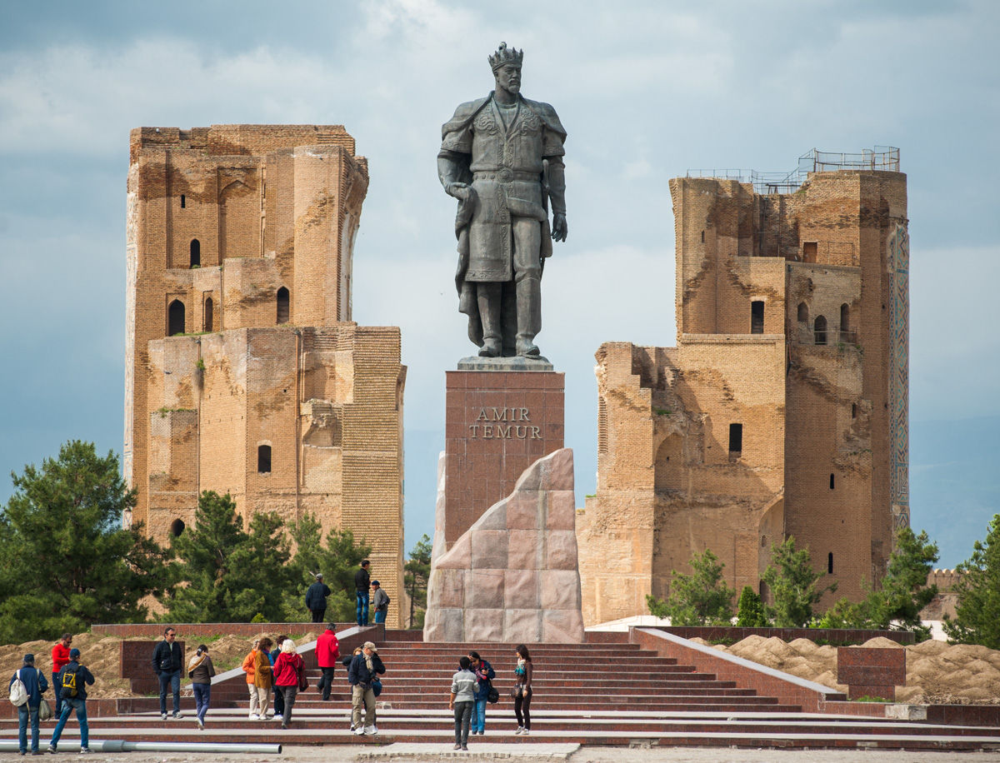
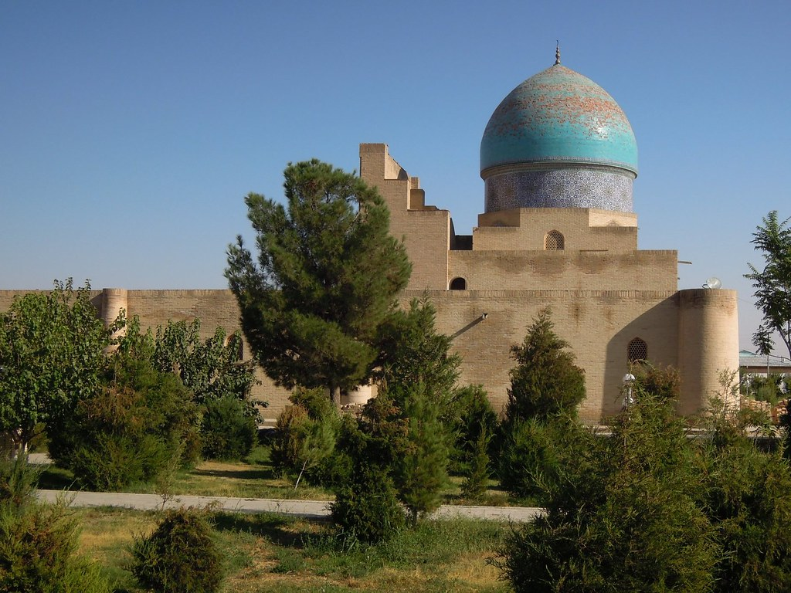

Kashkadarya region is located in the southern part of Uzbekistan on the western slope of the Pamir-Alai Mountains. There are several well–known nature reserves in the region - Kitab, Hissar and Kizil-Saysky. Pomegranates, quinces, peaches, pears, cherries, lemons are grown in the foothill areas. There is also a huge abundance of vegetables, several types of nuts: pistachios, peanuts, walnuts. Spacious pastures allow you to breed cattle. And all this under the warm sun, among wide fields and ancient mounds. In addition to excellent ecology and beautiful nature, the region is rich in monuments and memorials.
explore
Attractions
- Ak-Sarai Palace
- Dorut-Tilyavat Memorial Complex
- Dorus-Siadat Complex
- Kok-Gumbaz Mosque




